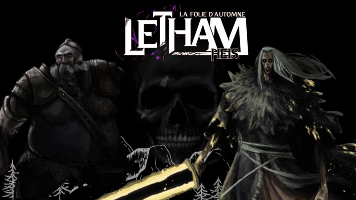

Le monde de la création artistique est vaste, et certains esprits créatifs ne se limitent plus à un seul domaine. C'est le cas d'Ehjos, scénariste et auteur du roman et manga dark fantasy "Letham heis ". Ehjos, se lance dans un projet ambitieux en adaptant sa propre œuvre en un jeu vidéo immersif !
En effet, ces projets éditoriaux, en pause pour plusieurs raisons différentes, ont conduit Ehjos à explorer de nouveaux horizons. Il a décidé de se tourner vers le monde du jeu vidéo, envisageant une adaptation qui mélange les éléments d'un RPG et d'un jeu de survie, s'inspirant de titres populaires tels que "The Forest", "The Last of Us" ou encore “Elden ring”.
L'univers du jeu, est également fortement influencé par "The Forest" et techniquement comparable à "Conan Exiles", promet une complexité similaire à celle des jeux de la série Souls. Le concept principal du jeu est défini comme un "arc survival", visant un public adulte en quête d'une immersion intense et d'une difficulté bien dosée, loin d'un simple RPG conventionnel.
Mais pour comprendre les récentes ambitions de Ephjos il faudrait remonter à ces premiers pas dans le monde des jeux vidéo. Remontant à sa découverte de jeux sur PSP, tels que Sonic Boom et Assassin's Creed. Jusqu’à des jeux plus matures sur ordinateur à son adolescence. Explorant des titres techniques comme Cossacks et se plongeant dans des survivals exigeants tels que "The Forest" et "Ark : Survival Evolved", aux plus connaisseurs d’entre vous .
Selon lui, la qualité des jeux a décliné au fil du temps, avec des narrations de plus en plus faibles, ce qui l'a conduit à s'éloigner des jeux vidéo grand public. Son esprit perfectionniste a finalement trouvé refuge dans la création de sa propre histoire, à travers le développement de son jeu.
Le coût croissant des jeux et la diminution de leur qualité, attribués aux limites imposées aux développeurs et animateurs en studio, ont renforcé sa détermination à créer un jeu à la hauteur de ses attentes.
Le 27 novembre, il a entamé le développement du jeu, bien que des dates spécifiques ne soient pas encore disponibles en raison d'autres projets en cours. Actuellement à la recherche de soutien financier régional et de ressources pour poursuivre son projet, Ehjos envisage également la formation d'une équipe de développeurs et d'animateurs.
Une bande-annonce est prévue avant l'été, donnant un aperçu de l'univers unique et captivant qu'Ehjos cherche à créer. Pour concrétiser ce rêve, il recherche activement 5 à 6 personnes passionnées et talentueuses prêtes à rejoindre cette aventure créative.